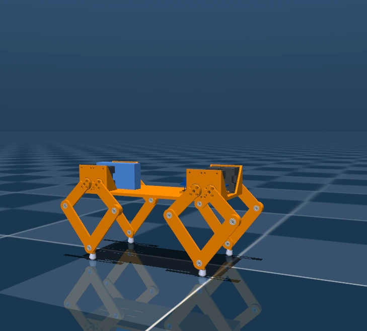

From PPO to a physical gait
Training a policy is only part of legged robotics. Moving it onto a small robot requires a consistent observation convention, predictable inference timing, accurate servo feedback, and control outputs that match what the motors can execute. This project closes that loop on a custom, eight-actuator Microtaur quadruped.
Engineering emphasis: the videos document on-hardware execution and simulation behavior. They should not be interpreted as proof of fully robust real-world locomotion on every terrain.
An end-to-end learning-to-hardware pipeline
Configured the custom Microtaur geometry, leg linkages, actuator and contact constraints in MuJoCo.
Built velocity-tracking tasks and rewards for forward progression, stability, smoothness, and realistic robot motions.
Converted the trained policy through a lightweight inference workflow for an Arduino UNO Q edge deployment.
Combined onboard inference with a microcontroller interface for IMU state, motor readings, and eight Dynamixel position targets.
Worked through command cadence, motor tracking under load, actuation dynamics, sensor synchronization, and rollout behavior.
Hardware and simulation demonstrations
The first two videos show policy execution on physical hardware; the third shows learned locomotion through rough terrain in MuJoCo.

The last mile is the engineering
Small embedded robots turn seemingly minor details into first-order control problems. A stable simulated gait may depend on actuator response and command timing that differ on the robot. This work made me focus as much on tracking errors, feedback validity, and repeatable hardware tests as on training reward.
- Latency matters: the model’s assumed control timing must align with actual sensor and actuator updates.
- Action scaling matters: physically meaningful joint targets and motor gains affect the learned behavior.
- Evidence matters: successful inference on hardware and stable closed-loop walking are related but distinct validation milestones.